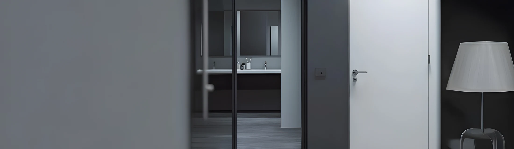

МЕЖКОМНАТНЫЕ
МЕЖКОМНАТНЫЕ36 мм
↗Полотно и погонаж в одном стиле
Полотно, короб и погонаж
в едином оформлении.

Три системы — 36, 42 и 59 мм. Подберём конструкцию,
покрытие и комплектацию вместе с производителем.
От первого эскиза интерьера
до двери, которая встаёт на своё место.
Выберите основу вашей двери.
Покрытие, размеры и детали
подберём под проект.
МЕЖКОМНАТНЫЕПолотно, короб и погонаж
в едином оформлении.
 СКРЫТЫЙ МОНТАЖ
СКРЫТЫЙ МОНТАЖЛаконичное решение
для целостного пространства.

АЛЮМИНИЕВЫЙ КАРКАСАлюминиевый каркас и высота
полотна до 2950 мм.
Посмотрите, как двери сочетаются
со стенами, светом и материалами.
Фотографии из нашей галереи.
Подберём конструкцию и комплектацию.
Поможем найти решение для вашего интерьера.
Производим двери в Тюмени.
Работаем с конструкцией, материалами
и отделкой как с единым целым.
Подбираем каркас под тип полотна, размеры и выбранное покрытие.
Торец, короб, петли и замок формируют внешний вид и работу двери.
Помогаем сочетать двери со стенами, мебелью и общей идеей интерьера.
Уточните наличие готовых полотен под ваш размер и открывание. Менеджер проверит доступные позиции и комплектацию.
Актуальное наличие подтверждает менеджер.Приглашаем салоны дверей и партнёров
к сотрудничеству с Hidden Doors.
Продукт от производителяКонструкции и покрытия для разных интерьерных задач.
Помощь с подборомОбсудим размеры, комплектацию и возможности исполнения.
Инструменты для работыКонфигуратор и материалы о продукции для ваших клиентов.
Расскажите, в каком вы городе.
Мы уточним задачу и подберём дилера.